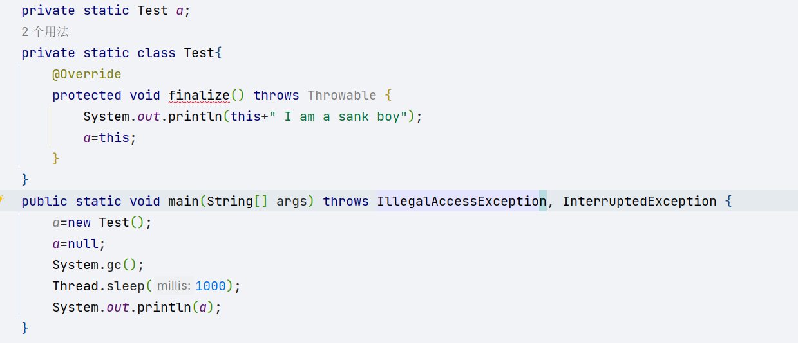
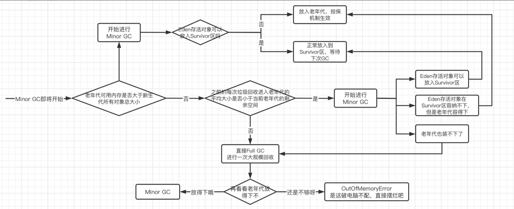

垃圾回收机制
2023-10-12
1 min read

垃圾回收机制
引用计数法
创建引用变量

循环引用,当对象成为null就没办法了

可达性分析算法：
最终判定过程，此过程可以最后挽留对象
重写finalize方法，最后可以救赎被gc的对象

比如下面这个情况

注意：

同时，这个方法只能生效一次，躲得过初一躲不过十五

分代收集机制:

方法区使用永久代实现

垃圾收集也分为： Minor GC - 次要垃圾回收，主要进行新生代区域的垃圾收集。
触发条件：新生代的Eden区容量已满时。
Major GC - 主要垃圾回收，主要进行老年代的垃圾收集。
Full GC - 完全垃圾回收，对整个Java堆内存和方法区进行垃圾回收。
触发条件1：每次晋升到老年代的对象平均大小大于老年代剩余空间
触发条件2：Minor GC后存活的对象超过了老年代剩余空间
触发条件3：永久代内存不足（JDK8之前）
触发条件4：手动调用System.gc()方法
打印GC日志
VM选项: -XX:PrintGCDetails
Minor GC流程

标记复制算法：
标记清除算法 利用GC算法，标记回收对象清除，但是会造成内存空隙，内存利用率低
标记复制算法：解决内存利用率低的问题
标记整理算法：
在一次GC之后仍然存在大量的老年代,效率较低，将会出现程序停顿

垃圾收集器实现：
Serial收集器


当前垃圾收集器实现

并发垃圾收集器CMS
垃圾清理过程中不会打断其他线程